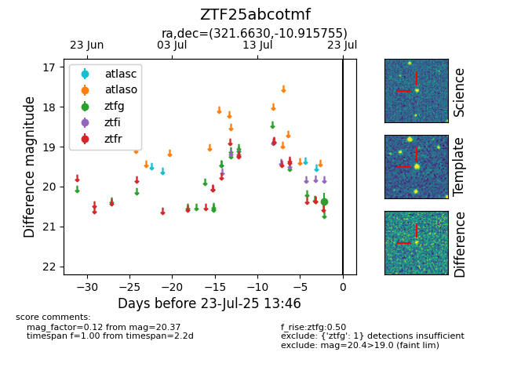

Target ZTF25abcotmf at 2025-07-23 13:46, see:
FINK: fink-portal.org/ZTF25abcotmf
Lasair: lasair-ztf.lsst.ac.uk/objects/ZTF25abcotmf
ALeRCE: alerce.online/object/ZTF25abcotmf
alt names
ZTF25abcotmf (ztf,fink)
coordinates:
equatorial (ra, dec) = (321.6630,-10.91576)
galactic (l, b) = (41.2620,-39.34362)
photometry
last ztfg=20.37
1 ztfg detections
